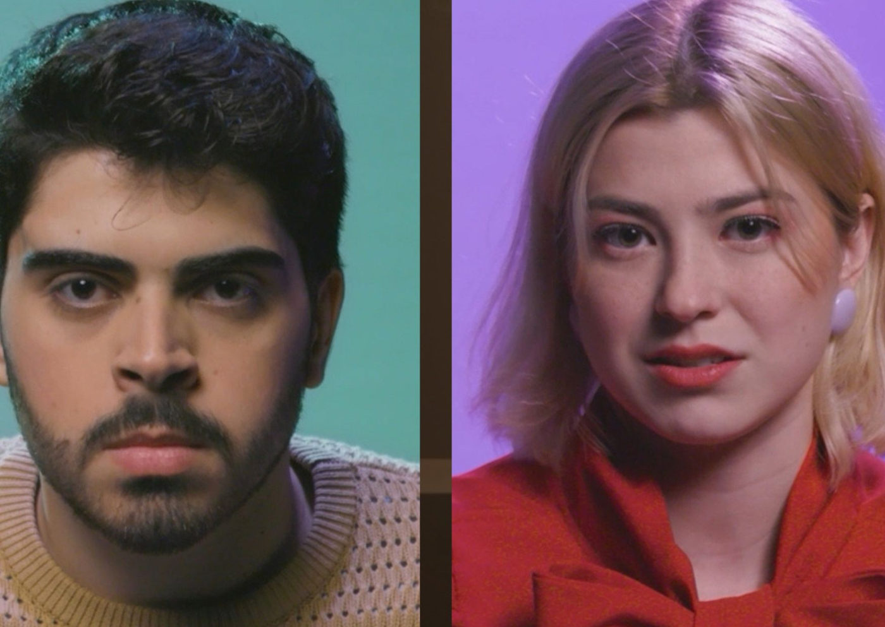

Foto — Divulgação
Streaming
Dos palcos para as telas: “Bom dia sem companhia”, obra de Vitor Rocha, chega às plataformas de Streaming
O espetáculo “Bom Dia Sem Companhia” foi inicialmente pensado para ser uma produção híbrida que pudesse transitar entre os palcos e o audiovisual, e depois de t…